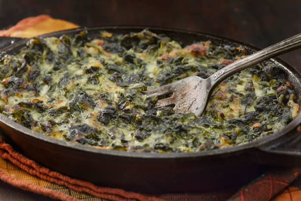

Home
Spinach Casserol

Description:
This creamed spinach casserol serves 4-6 and comes together in minutes
for an easy side dish you'll be proud to put on the table.
Ingredients:
- Butter
- Corn starch
- Milk
- Salt
- Onion powder
- Pepper
- Frozen chopped spinach
- Bacon
- Shredded cheddar cheese
- Paprika
Steps:
- Defrost spinach
- Chop and fry 6 slices of bacon
- Make roux
- Melt 4 Tbsp butter
- Add 2 Tbsp Corn starch
- Add 1 Cup milk
- Add 1/8 tsp salt
- Add 1/8 tsp onion powder
- Add 18/ tsp pepper
- Combine roux, spinach, bacon, and cheese
- Back @ 350°F for 15-20 minutes
- Sprinkle with Paprika